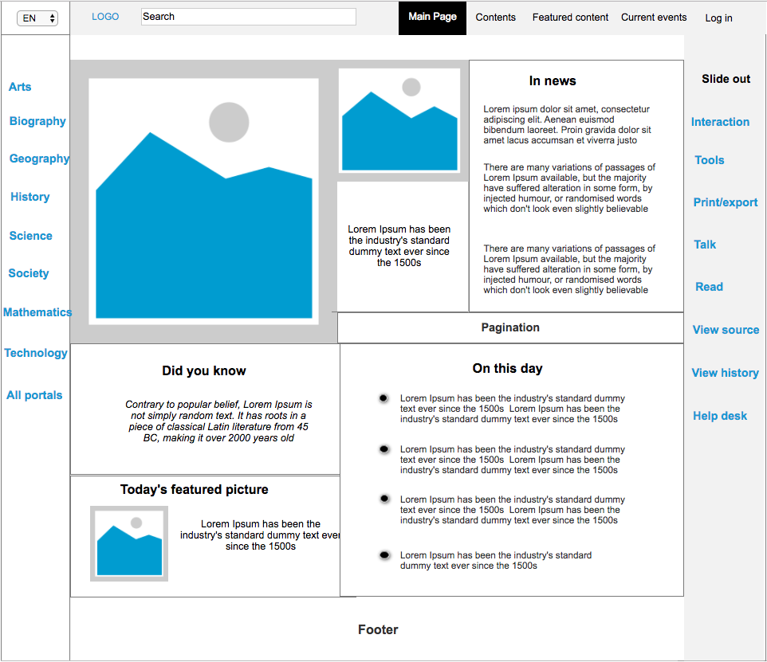

Wikipedia redesign
Redesign concept
Wikipedia is one of the most visited websites in the world. It hasn’t been changed or redefined during the last 10 years. The homepage of current Wikipedia is overcrowded with display of languages, sister projects etc which overshadows the main functionality–the search area. This is a try to make Wikipedia more modern, readable, useful and personal.
Features that need rethinking and new design
- Scattred navbar - Current Wikipedia site has very scattered navbar with important links and search are hidden and hard to find on the first sight.
- Responsiveness - The modern website should handle different screen sizes and slow connections to cater to wide range of audience
- Guidance - Take your visitors by the hand. Don’t expect your visitors to explore your site all on their own. Instead, guide them through your site and show them what you have to offer
Sketches - Rapid Concept Development
Sketching is an excellent way to quickly explore concepts. I have sketched couple of design concepts based on my research on effective layout choices and navigation concepts. I have used a slideout navigation sidebar on the right side to make more space for more important content and less scrolling to view the main content. The current Wikipedia site consumes lot of space at the bottom of the page for the languages and sister websites, in my design I have saved lot of space that is used for languages by making it a easy to use dropdown.
Wireframe
I used Axure to put together wireframe of my design concepts. below is the wikipedia redesign wireframes designed using Axure
